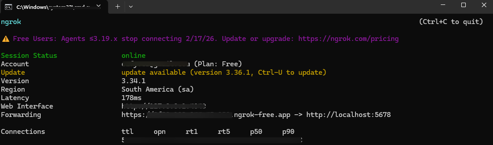
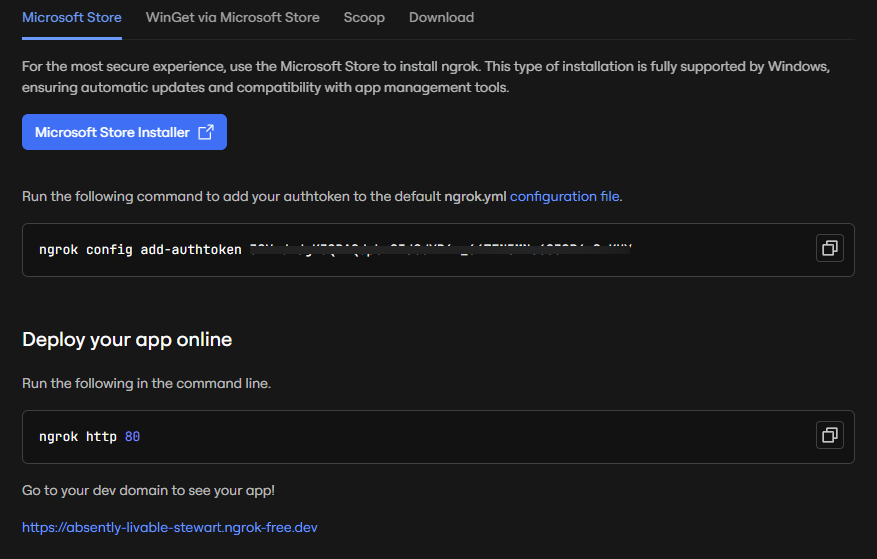

📖 GUIDE : UTILISER TELEGRAM & WHATSAPP AVEC N8N EN LOCAL
🏛️ 1. Architecture du Système
Pour que n8n fonctionne en local, nous utilisons la structure suivante :
- n8n : Le cerveau (Local).
- ngrok : Le tunnel (Le pont vers l'extérieur).
- Webhooks : Les messagers (Les déclencheurs).
Qu'est-ce qu'un webhook ?
Un webhook est un moyen pour des applications de s'envoyer automatiquement des données en temps réel lorsqu'un événement spécifique se produit.
Schéma du flux :
Utilisateur -> Telegram/WhatsApp -> URL ngrok -> n8n (Local)

⚙️ 2. Configuration du Tunnel (ngrok)
-
Lancer n8n :
n8n start(via le terminal). -
Aller sur le site ngrok, s'inscrire, puis accéder à la section
Setup & installationVoilà ce qui devrait s'afficher après un scroll vers le bas :

-
Ouvrir un nouveau terminal et copier les commandes sur l'image précédente dans l'ordre.
Pour la première commande, copier sans changement.
Pour la deuxième commande, remplacer juste
80par5678ou bien copier et coller ceci :ngrok http 5678Voilà ce qui devrait s'afficher :
-
Fermer n8n : Dans le terminal où n8n a été lancé, taper
CTRL+C -
URL à vérifier : l'adresse qui est devant
https://localhost:5678.Variable à voir :
WEBHOOK_URL=https://*********.ngrok-free.appoù l'URL est celle du point 5 précédent. -
Lancer n8n à nouveau dans le même terminal :
n8n startoun8nounpx n8n(via le même terminal). - Ensuite, dans un workflow, mettez le nœud Telegram et vérifier que l'URL dans WEBHOOK_URL a changé par celui défini précédemment.